1自动记忆
@a9i5k4/dsh-auto-memoryv3.3.17· a9i5k4主动联想记忆。开工前自动唤回相关的历史工作与已定决策，注入上下文；内置三层自动沉淀，日志会变成笔记、账本与白板。
适合：一个项目要做很多天、换会话还要接着做。

用户使用手册 · 中文版
从安装到日常使用，一册讲清怎么用、去哪里找、出问题怎么办。
阅读指南
这是一份给普通使用者的操作手册。它不要求你会写代码，也不需要事先安装 Node.js、pnpm 或任何开发工具——安装包里已经带好了全部运行环境，装完就能用。
十三节按「装好 → 用起来 → 出问题」的顺序排。只想解决某个具体问题，可以直接跳到第十二节。
一句话：它把 DeepSeek Harness 的智能体能力装进了一个桌面应用，双击图标就能开始对话、让它读写文件、执行命令、调用工具。
整个产品由三层组成，你只需要和第三层打交道，前两层在后台自动运行。
这个版本（Essentials 版）和软件仓库里的通用版还有一个区别：它不是「装了壳子等你装插件」的空应用，而是把 27 个已经挑过、互相能配合的插件一起装进安装包。装完第一次打开，这些能力就已经在插件页里等着了，不用你逐个去 npm 上找。
到产品下载页取对应平台的安装包，双击即可。安装包已经内置 Electron、Node.js、pnpm 和固定版本的 DSH 运行时，不需要另外装任何环境。本版内置的是 Electron 44.0.0、Node.js 24.21.0、pnpm 11.8.0、Python 3.12.14，以及 DSH 运行时 0.2.2-rc.3。
| 平台 | 下载到 | 怎么装 |
|---|---|---|
| Windows x64 | .exe 安装程序 | 双击运行，按提示下一步完成 |
| macOS（Intel / Apple 芯片通用） | .dmg 磁盘映像（通用二进制） | 打开后把图标拖进「应用程序」 |
| Linux x64 | .AppImage / .deb / .rpm | AppImage 先 chmod +x 再运行；deb / rpm 用系统包管理器安装 |
升级安装不需要手动关旧版。安装器会先请求正在运行的旧版本退出，等不到就强制结束它，再覆盖文件；如果确实关不掉，安装会明确报错并停下，而不是装完打不开。升级前仍建议先保存手上的工作。卸载时同样会先确认并关闭正在运行的程序，避免卸到一半文件被占用。
注：下载页当前提供的是 Windows x64、macOS 通用包与 Linux x64 三种。Linux 的 arm64 产物在测试通道构建，尚未进入稳定下载链接；ARM 设备上若遇到原生模块问题，请改用对应平台的 x64 版本或测试通道产物。
这一章记录一次完整的首次安装：2026 年 11 月 15 日 09:04 到 11:19，在一台 Windows 11 机器上，从双击安装包一路做到补装命令行工具、跑完第一次自检。全程截了 105 张图，按拍摄时间排序，编号 图 3-1 到 图 3-105；每一步都写清「当时在哪个界面、点了什么、为什么这么点」。
实际动手的部分不到十分钟，其余时间都在等：等 27 个内置插件逐个装完，等 239 MB 的语音模型下载，等一次健康检查把自己修好。如果你只是想尽快用起来，照 3.1 到 3.5 走完就够了；想把各项配置一次配齐、顺手让 AI 把这台机器检查一遍，接着看 3.6 以后。
| 时间 | 这一段在做什么 | 小节 / 图号 |
|---|---|---|
| 09:04–09:08 | 双击安装包，走完安装器 | 3.1 / 图 3-1 – 3-6 |
| 09:08–09:09 | 首次启动，六步向导 | 3.2 / 图 3-7 – 3-13 |
| 09:09–09:15 | 27 个内置插件逐个安装 | 3.3 / 图 3-14 – 3-17 |
| 09:16–09:18 | 记忆中枢、记忆插件引导、费用联动 | 3.4 / 图 3-18 – 3-30 |
| 09:18–09:19 | 填模型 API Key | 3.5 / 图 3-31 – 3-33 |
| 09:20–09:25 | 插件页，打开实验性插件 | 3.6 / 图 3-34 – 3-39 |
| 09:26–09:29 | 设置页逐项过一遍 | 3.7 / 图 3-40 – 3-60 |
| 09:29–09:32 | 主界面的几个下拉、第一次提问 | 3.8 / 图 3-61 – 3-68 |
| 09:33–09:34 | 健康检查撞上两次权限审批 | 3.9 / 图 3-69 – 3-70 |
| 09:34–09:36 | 语音输入插件，下载本地识别模型 | 3.10 / 图 3-71 – 3-77 |
| 09:36 | 「重启」下拉里的三种重启 | 3.11 / 图 3-78 |
| 09:37–10:33 | 健康检查跑完，修掉三处真实故障 | 3.12 / 图 3-79 – 3-82 |
| 10:34–10:49 | 补装 gh / ffmpeg / uv，顺手下载新版本 | 3.13 / 图 3-83 – 3-94 |
| 10:56–10:57 | 把界面语言换一圈看看 | 3.14 / 图 3-95 – 3-98 |
| 11:02–11:03 | 核对工具版本，重启生效 | 3.15 / 图 3-99 – 3-102 |
| 11:18–11:19 | 装完之后的样子：上下文面板与仿真器面板 | 3.16 / 图 3-103 – 3-105 |
安装包从官网下载好之后就在桌面上，文件名带着版本号和架构：Nonead-DSH-Desktop-2.2.12-x64-Setup.exe。双击它开始，不需要先解压，也不需要先装运行库——运行时是打进去的。
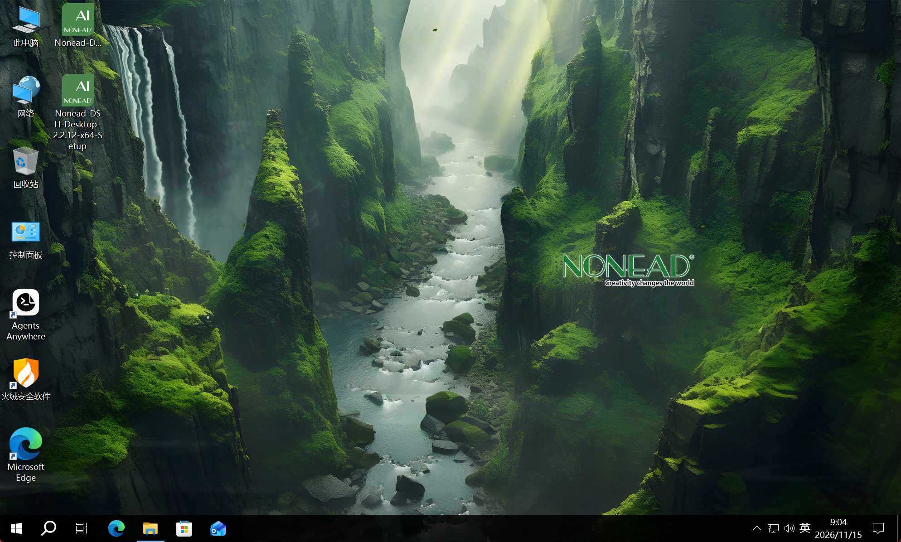
第一个界面只问一件事：装给谁。「为所有用户安装」需要管理员权限，程序装到系统目录，这台机器上所有账户都能用；「仅为我安装」不需要提权，装进当前用户目录，只有你能看到。单机自用选哪个都行，公司共用一台机器时选前者。

紧接着是目标目录页（这一页当时没有截图）。默认位置跟着上一步走：所有用户装到 C:\Program Files\Nonead DSH Desktop，仅为我安装则装到用户目录。这次把目录改到了数据盘 D:\Software\Nonead DSH Desktop，后面所有截图里出现的安装路径都是它——如果你按默认装，把文中这个路径替换成你自己的即可。
再往后是「选择附加任务」。这一版只提供一项：创建桌面快捷方式。保持勾选，安装完成后桌面上会多一个入口，托盘图标也会常驻。


点「安装」后进度条开始走。安装器做的事很简单：把运行时和 27 个插件的包解到目标目录。这一步大约三分多钟，期间不要动目标目录里的文件。

结束时勾选「运行 Nonead DSH Desktop」直接启动，省一次双击；如果打算先看安装结果再启动，把勾去掉也行。
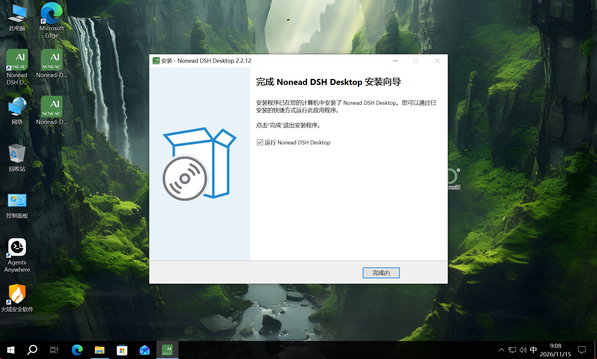
第一次启动会先出现一块黑底启动屏。它在扫描 Profile、加载插件；第一次启动要建索引，比平时慢，看到 Loading plugins... 停十几秒是正常的。

界面起来之后自动进入向导。向导一次只问一件事，右上角 1 / 6 这类计数告诉你还剩几步；每一步右下角都有「跳过」，跳过的意思不是「以后不再问」，而是「用默认值继续」。

desktop 的 Profile，之后可以再建别的 Profile。
dsh-market（数据来自 awesome-dsh-plugin）、暂不开启。这次选了 dsh-market。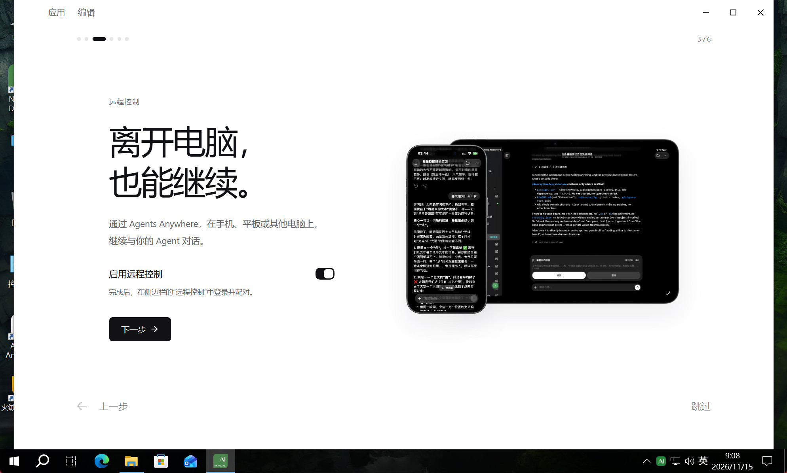
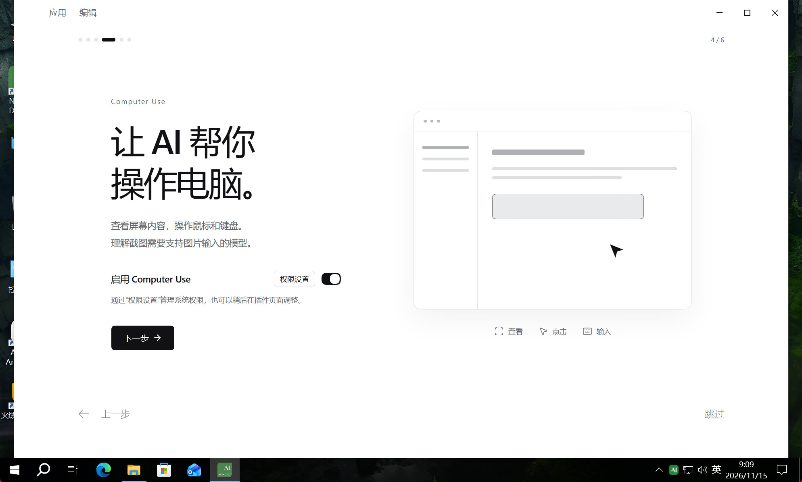

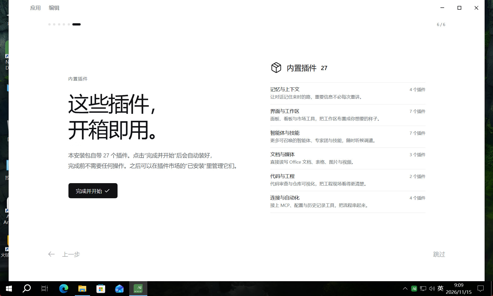
| 步骤 | 这一步在问什么 | 建议 |
|---|---|---|
| 1 欢迎 | 说明向导会配置哪些内容 | 直接「下一步」 |
| 2 插件市场 | 关闭 / dsh-community-market（Beta）/ dsh-market，一次只能启用一个 | 先关掉也能用；想要市场就选一个，之后可改 |
| 3 远程控制 | 是否用 Agents Anywhere 从手机、平板或其他电脑访问这台电脑 | 不清楚就先关；开启后需在侧边栏「远程控制」里配对 |
| 4 Computer Use | 是否允许 AI 操作桌面（看屏幕、点鼠标、敲键盘） | 不需要就关；开启后仍需逐次授权 |
| 5 恢复模式 | 介绍起不来时怎么进恢复助手 | 看一眼即可 |
| 6 内置插件 | 按六个大类说明自带的 27 个插件，并开始逐个安装 | 点「完成并开始」，等它装完 |
点「完成并开始」之后，向导变成一块安装面板：左边固定几句解释，右边是进度。每轮到一个插件，就换一张卡片，上面写着插件名、所属大类、版本号、完整说明，以及一句「感谢某某带来这个插件」；卡片下面是一条进度条和 8 / 27 这样的计数。
这一段不需要你做任何操作。27 个包按清单顺序装，中间不弹确认框；装完会自动重启一次界面服务。第一次启动之所以比平时久，主要就是花在这里。

0 / 27，第一个进场的是 @a9i5k4/dsh-auto-memory v3.3.17（记忆与上下文）。
8 / 27，轮到 @michengai/dsh-skills-manager v1.4.6（智能体与技能）。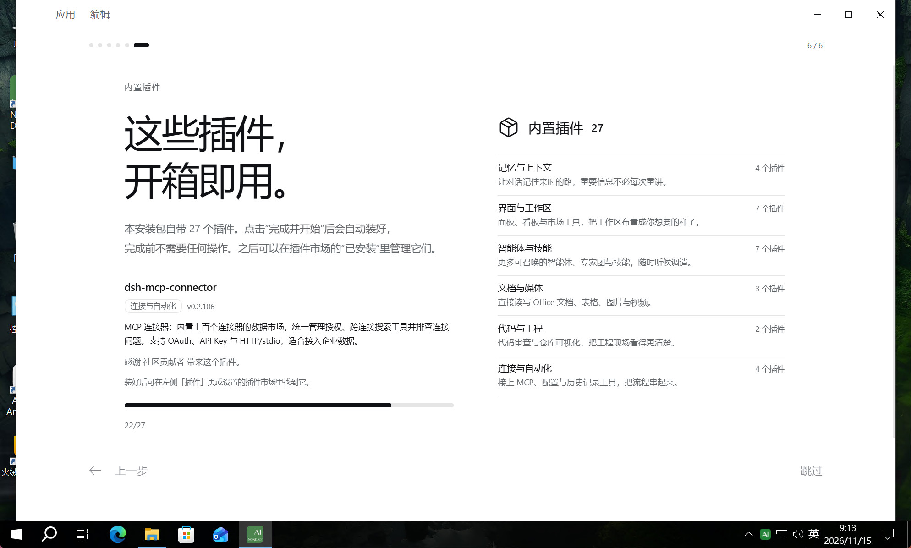
22 / 27，dsh-mcp-connector v0.2.106（连接与自动化）。
105 张截图里，这一段只留了四张代表——二十七个进度页长得一样，逐张贴出来只是重复。每个插件装完能做什么，写在第九节；打包清单本身在安装包的 plugin/manifest.json 里。
重启之后，界面还没到主界面，先来一个弹窗：建立「记忆中枢」。它属于记忆插件 dsh-auto-memory，要做的事是新建一个专用工作区（目录 ~\.dsh\aik_auto_memory_use）和一个后台会话来托管记忆整理，这样问答、总结、沉淀这些后台任务不会挤进你的会话列表。
弹窗里四项要核对：工作区位置、权限、期号、工作区登记。其中权限必须是「完全访问」——受限权限会把后台任务挡在沙箱外面，它读不到记忆目录，表面上不报错，功能其实静默失效。底下一行小字也说明了：建立完成前所有后台记忆任务都暂停，不会发任何请求。
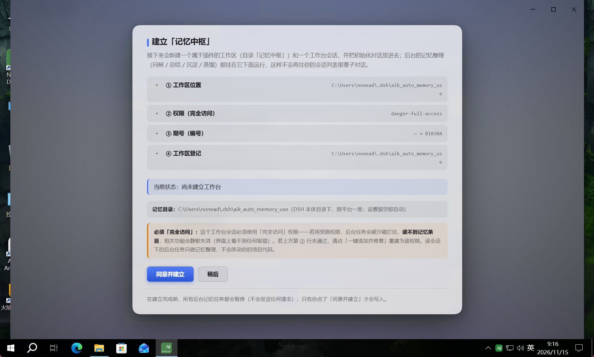
danger-full-access 是这一功能能工作的前提，不要改成受限。点「同意并建立」，几秒后四项都打勾，状态变成 ok，后台记忆任务开始运行。这个对话框之后不会再出现；想改工作区目录或轮换周期，在 设置 → 自动记忆 里改。
接着是记忆插件自己的九步引导，页面是逐项开关：每一页讲一个机制，配一个「推荐开」的开关，改完立刻保存，右上角有计数 01 / 09。

ok，点「好，开始使用」继续。
01 / 09 欢迎页。整套引导可以随时「跳过向导」，之后在 设置 → 自动记忆 里逐项改。
03 / 09 周期性记忆注入：首次启用时注入一段项目笔记摘要，之后按轮次或在上下文被压缩后重新注入。
07 / 09 三级语义引擎：词法检索兜底、内置语义引擎（约 129 MB）、可选 Python 进阶档。这里正在下内置档，9.8 / 112.8 MB。
C2 · 129 MB。下载过程不用管，走完就能往下走。
08 / 09 该出手时才出手：记忆唤起（链中检测再插入）、记忆固化（每轮结束自动沉淀）、技能固化与注入。最后一页把前面所有开关汇成一张彩色标签清单——开着的标绿、关着的写灰字。看到这一页说明引导走完了；其中「夜间/批量自动托管」与「定时总结」默认是关的，想要无人值守再开。
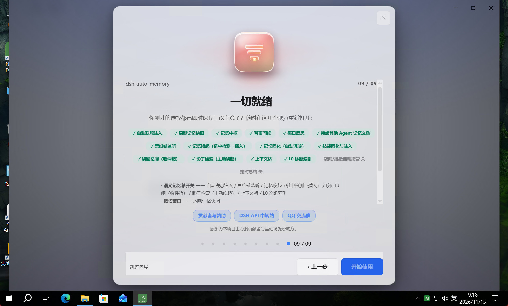
09 / 09 一切就绪。标签即状态清单，之后随时能在设置里改；右下角「开始使用」收尾。
紧接着弹的是两个插件之间的联动提示：dsh-context（看上下文构成）和 dsh-cost-meter（算钱）发现对方版本兼容，问要不要合到一起——左边是启用前的样子，右边是启用后多出来的「上下文费用构成」。这是可选增强，点「启用联动」就在上下文面板里多一块费用；点「暂不启用」也不影响任何功能。

dsh-auto-memory 的版本更新说明。再往后是桌面壳自己的收尾页：一句「桌面设置已完成」，提醒你去 DeepSeek 官网拿 API Key，另外给两个按钮——「访问 NONEAD」跳到官网，「暂时跳过」直接进主界面。右上角还会飘一条「按需设置费用显示」的提示，说的是侧边栏余额条怎么调，点「知道了」即可。
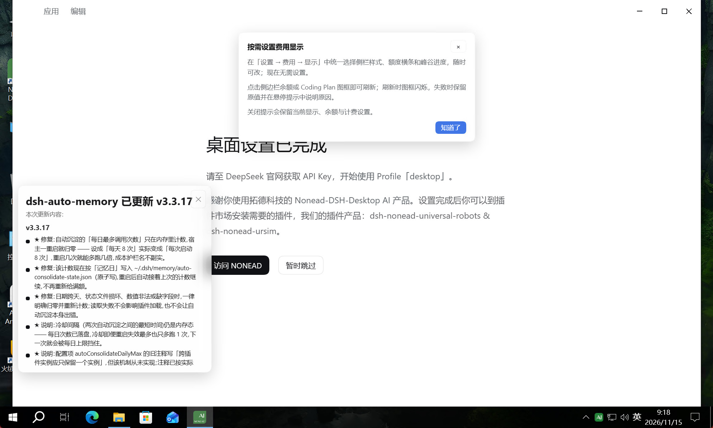
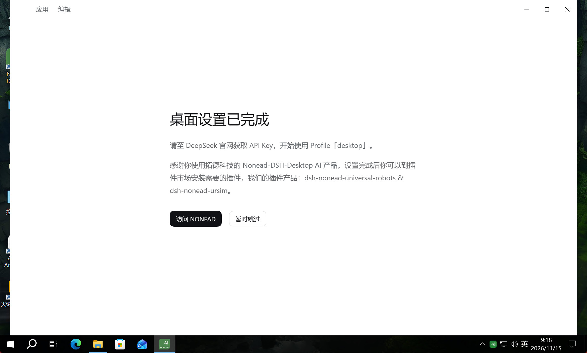
点「暂时跳过」进主界面。此时侧边栏已经有两个工作区（「记忆中枢」是刚才建的，「默认工作区」是自带的），底部显示今日花费 ¥0——因为还没配密钥，一次请求都没发出去。

没有密钥就只能看界面不能对话，所以装完第一件事是去 设置 → 模型。这一页已经预置了 DeepSeek 官方提供商 deepseek-official，只差一个密钥。
密钥框下面那行橘色小字值得读一遍：它先找环境变量 DEEPSEEK_API_KEY，找不到才要求你手填。也就是说，习惯用环境变量管理密钥的人可以什么都不填，重启之后那一栏会自动变成已配置。
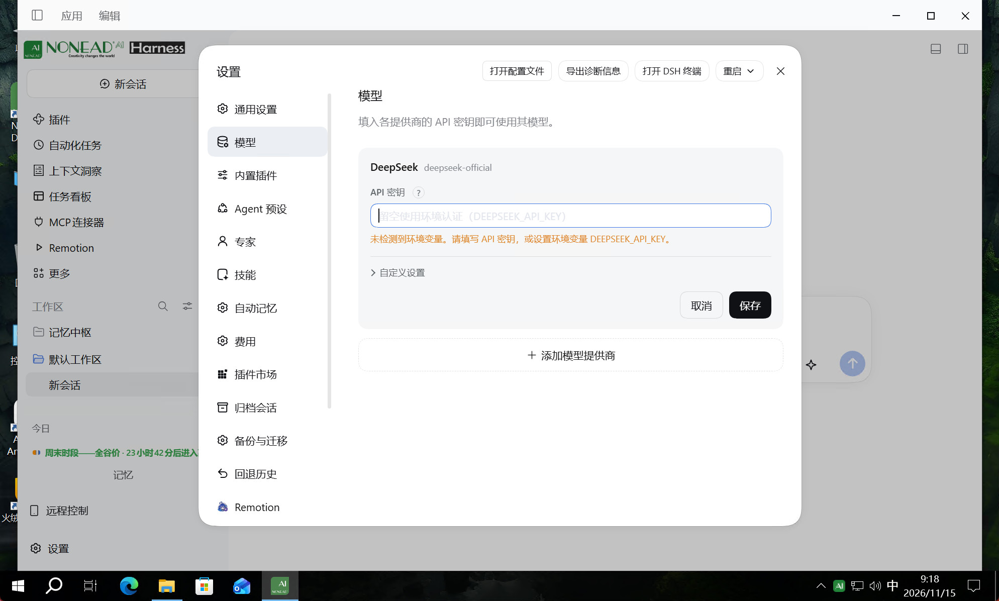
DEEPSEEK_API_KEY。
保存之后顶部出现一行绿字「已保存 DeepSeek（deepseek-official）」，下面的卡片换成一个带绿点的「DeepSeek」和「编辑」按钮。绿点表示这条通道可用，之后想换模型或加中转，走卡片下面的「添加模型提供商」。

DeepSeek-V4.1-Flash 可选。填完密钥，接着把侧边栏「插件」翻一遍。这一页分三段：上面是开关类（插件市场二选一、远程控制、Computer Use），中间是已安装 / 插件市场 / 发现三个标签，下面是内置插件配置——子智能体、网页搜索与获取、Agent 循环这些属于「有开关但没有独立界面」的插件，配置入口都收在这里。

¥2435.81——密钥生效后费用通道开始工作。往下滚是「实验性插件」区。默认全部关闭，因为它们「能提前用，但不保证稳定」；这一版把常用的几个都打开了：语音输入、自定义插件索引、自动授权审查、变更请求与工作树。


完整列表更能看清取舍：开了的排在前面，没开的在后面。其中「开发者工具」被标了红色的「异常」——它加载成功了，但有一项自检没过；不影响日常使用，排查问题时那条标记正好提醒你它可能不可靠。
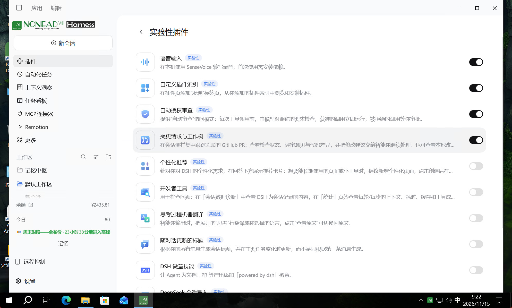
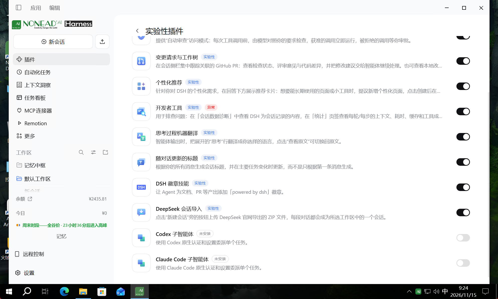
最后看「插件市场 → 已安装」，这里才是 27 个插件的账本。每张卡片给出名字、版本、来源（本地开发会写路径）、一段说明、「添加备注」，以及「有新版本 vX.Y.Z」——升级就在这里点，不用去命令行。
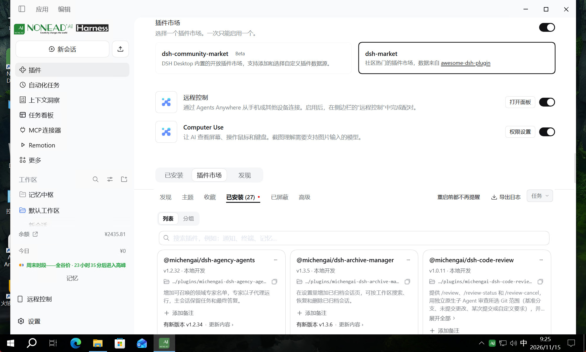
@michengai/... 这类标着「本地开发」的是随包装进来的插件，来源路径显示在说明下面。设置是这一版信息密度最高的地方：左侧列表随着插件增加会越来越长，这一版的完整顺序是——通用设置、模型、内置插件、Agent 预设、专家、技能、自动记忆、费用、插件市场、归档会话、备份与迁移、回退历史、Remotion、MCP 连接器、提示词历史、侧边卡片、桌面设置、bili 设置。下面对每一页只写「这一页决定什么」，具体开关按需改。
通用设置是第一页，也是最该改的一页。这次的取值：权限「工作区内修改」、语言中文、外观跟随系统、字号 14 px、工作步骤展示「标准」、收起时机「回答结束后」、收起后显示「全部回复」。

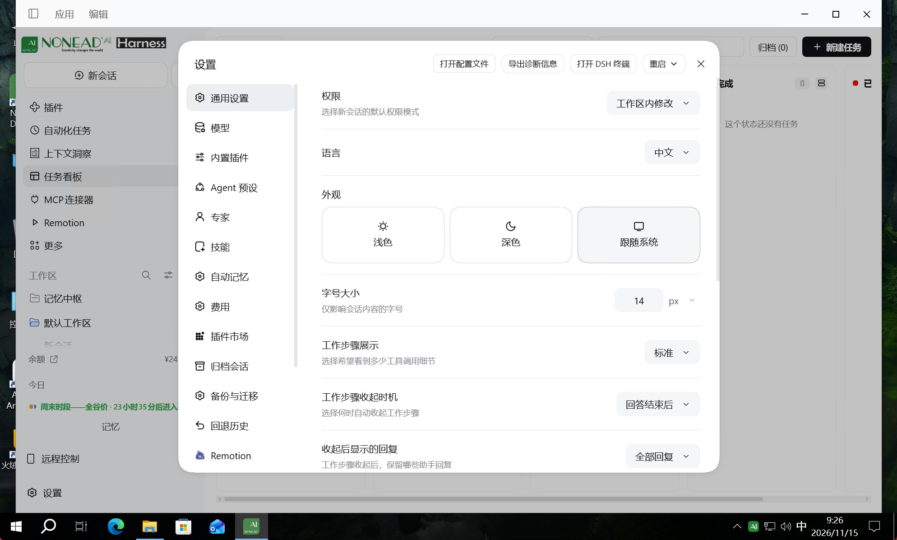
内置插件把「会话插件」按作用排成卡片：智能体角色设定、工作区指令加载、时间感知、Bash 命令工具、PowerShell 命令工具、文件读写工具。开着的是会被装进每个会话的，停用等于全局关掉。

persona、tool-fs 等）是插件 id，排查问题时报这个更准。
专家与技能是两套「能力包」：专家是按领域配好提示词的角色，技能是一段可复用的操作说明。出厂状态下专家有三百多个但只启用两个（越多越吃上下文），技能 45 个全部启用，绝大部分来自 WorkBuddy 目录。
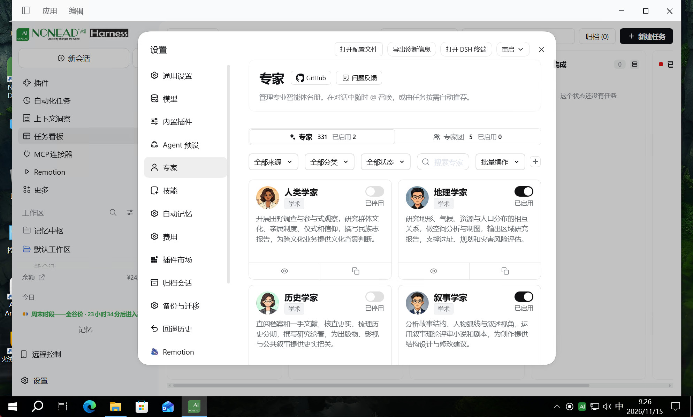

自动记忆分成四个标签：查找与回忆、记录与使用、外观与目录、接续与维护。这一页和 3.4 里那套引导是同一组开关的两个入口——引导负责「第一次怎么配」，这里负责「以后怎么改」。

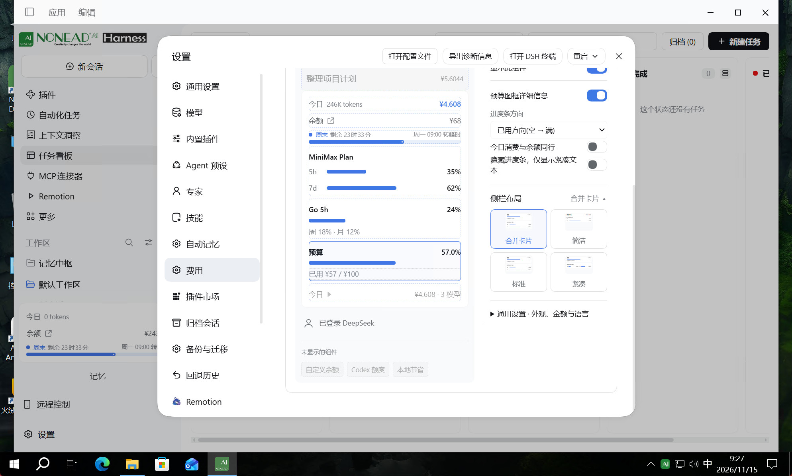
插件市场页和市场里那个入口是同一份数据，区别是这里能改「是否显示在侧边栏」「重启前都不再提醒」这类壳层面的偏好。

dsh-market v1.73.19；下面一行「已隐藏 0 个与 DSH 0.2.2-rc.3 不兼容的插件」是版本自检的结果。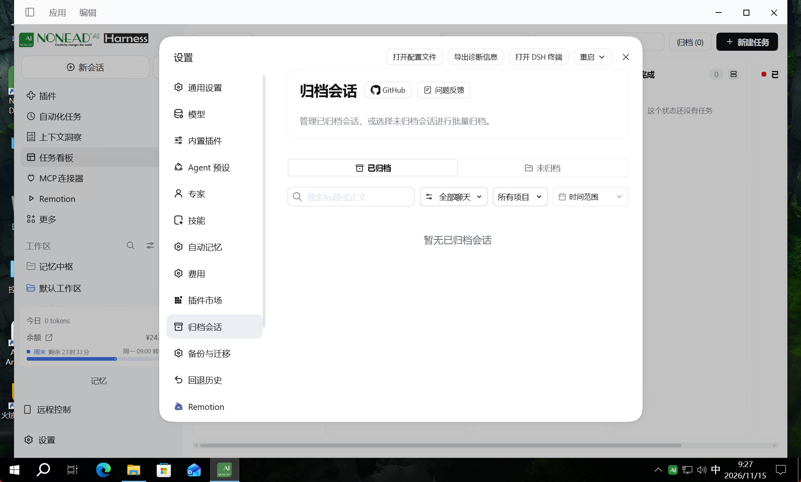
备份与迁移负责把配置打包带走：换机器、重装、同步都用它。打开这一页时弹了一张版本更新说明（配置管理器 v0.9.0），这类说明只在版本变化后出现一次。

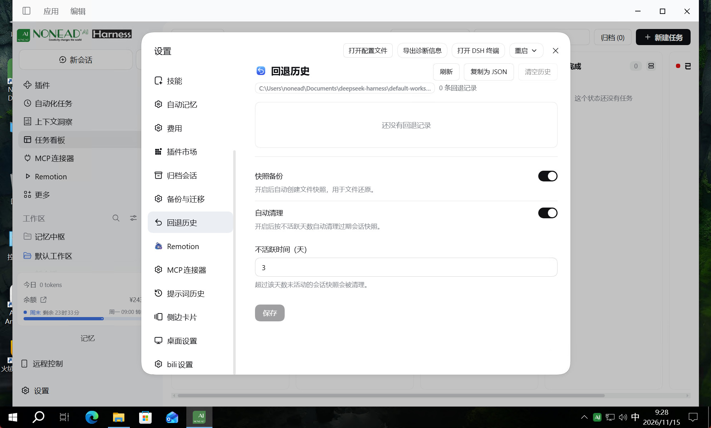
Remotion 是视频渲染插件，第一次用要下载官方依赖（截图里正走到 3 / 6）。不打算做视频的话，这一页可以一直不碰。

dsh-remotion 0.10.6，渲染环境首次使用才需要准备，下载量不小，建议网络空闲时再做。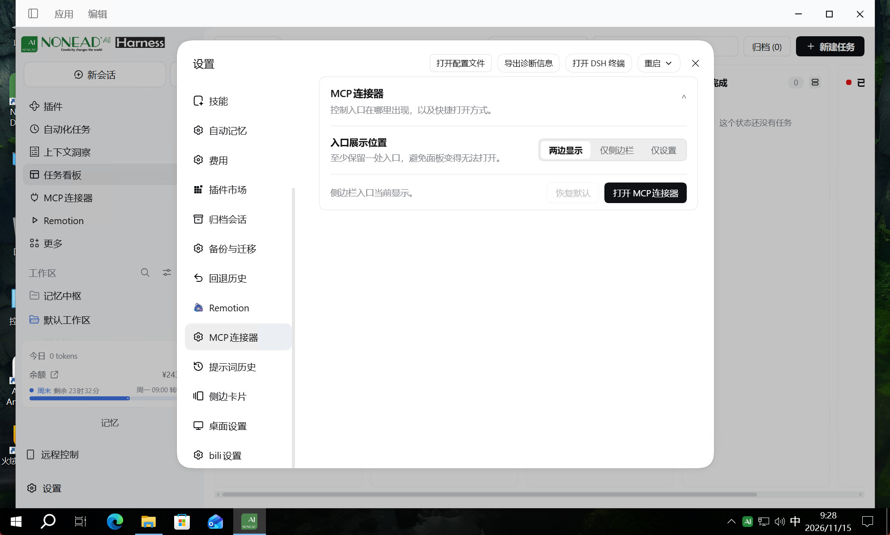
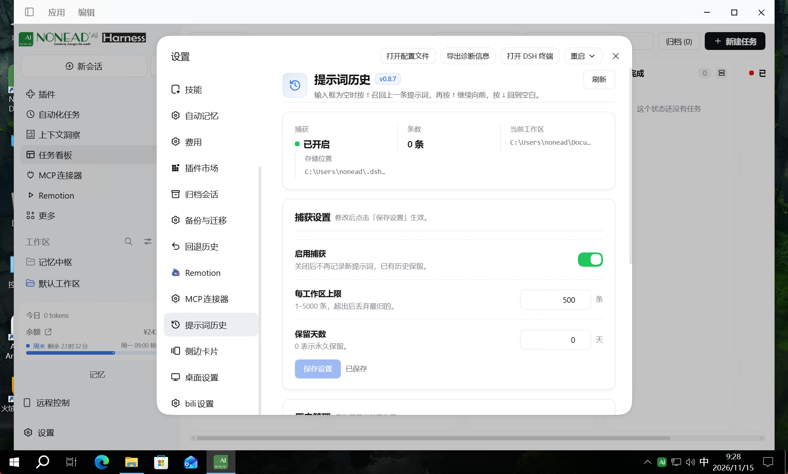
v0.8.7。作用是输入框里按 ↑ 调出上一条；每工作区上限 500 条，保留 0 天表示永久。
DSH-better-sidebar v0.32.1。「为模型注入侧边栏打开工具」开着时，模型才能主动把文件或网页推到侧栏。桌面设置是桌面壳自己的配置，和 DSH 内核无关：Profile 管理、浏览器访问、通知、系统权限、应用更新、启动与后台、日志与恢复助手。插件市场与远程控制从这一页挪走了，页面顶部专门留了一句说明和跳转按钮。
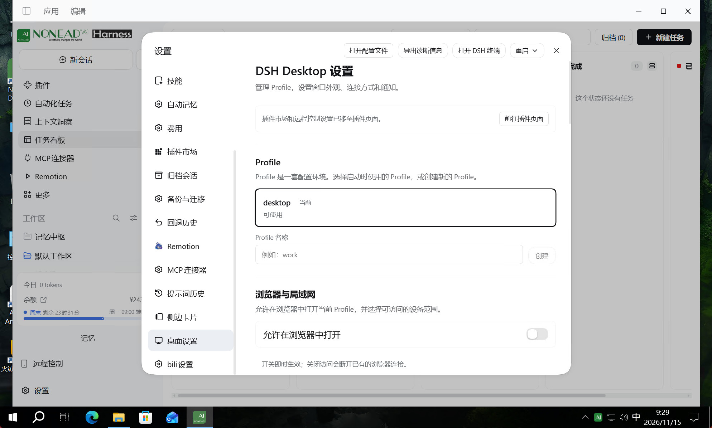
desktop 标着「当前」；「允许在浏览器中打开」关着，开了才能用浏览器访问同一个 Profile。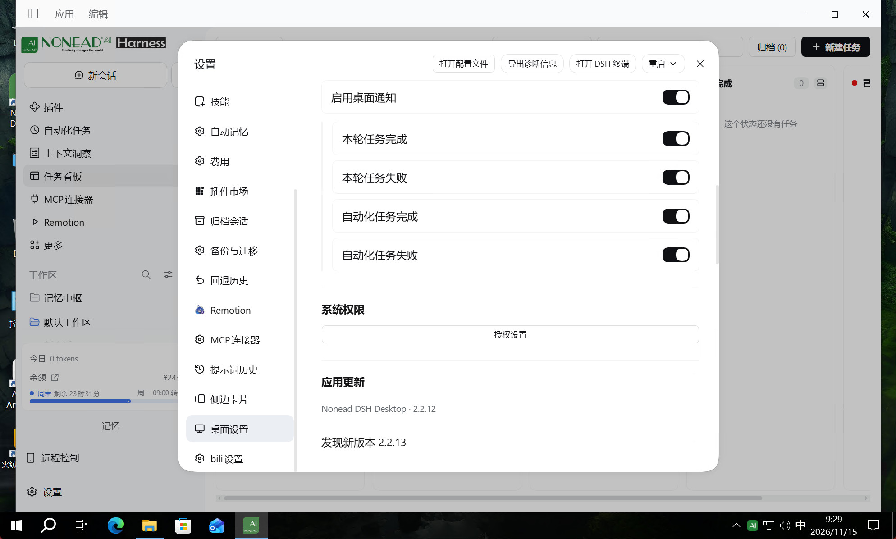
2.2.13。再往下是更新的详情与启动行为。这一段文案是英文的——更新说明原文如此，不影响判断：三个按钮分别是「下载更新」「重新检查」「跳过此版本」。「关闭窗口后保持后台运行」默认开着，这也是为什么关窗口不等于退出。

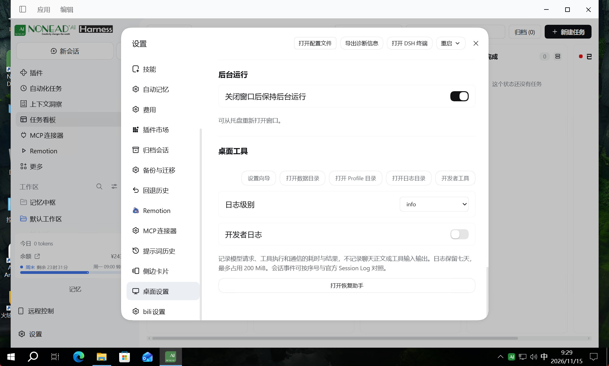
info，出问题时先来这里。最后一项 bili 设置来自上下文压缩插件 billion-context，概览页给三条提示：检测到宿主侧插件、prompt_cache_key 自动注入默认关闭、以及大上下文增量解析。它管的是「长会话怎么省 token」，日常不用动。
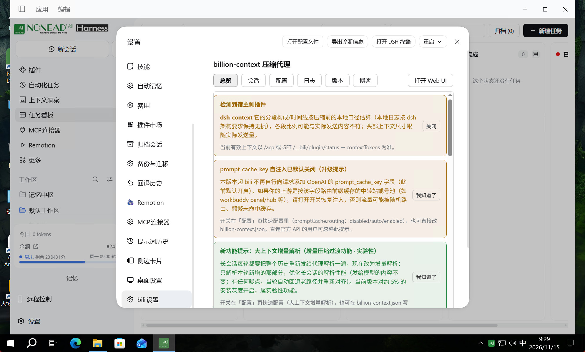
回到主界面，输入框周围那几个小下拉值得认识一下——它们决定「这一次」用哪个工作区、多大权限、哪个模式、哪套专家、哪个模型。

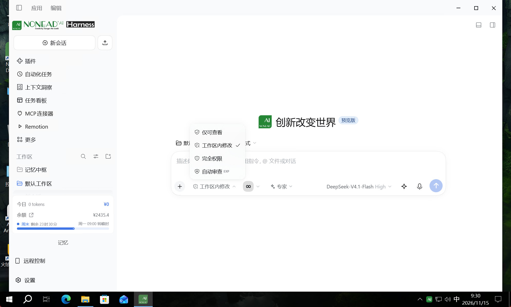
EXP 表示实验性。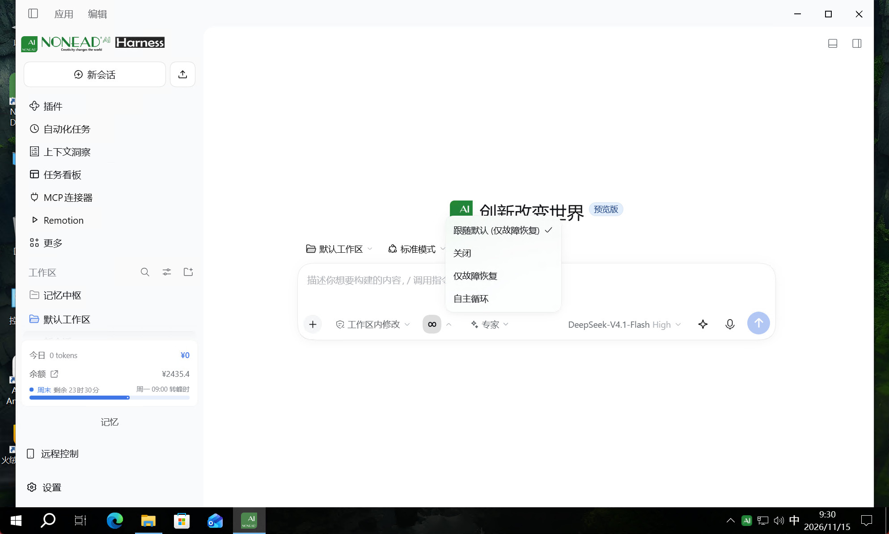

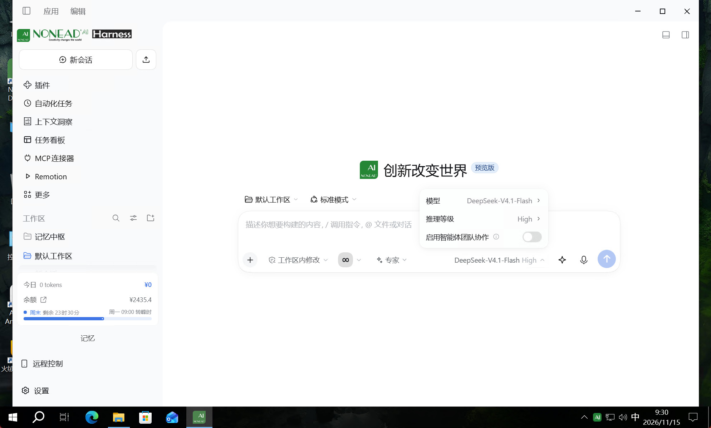
High）、以及「启用智能体团队协作」。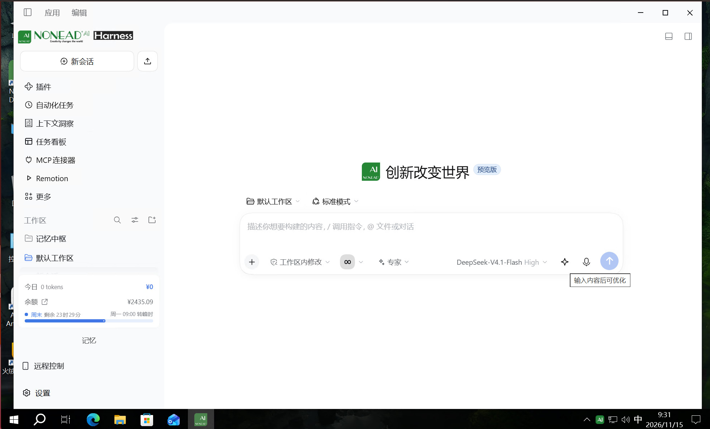
第一次提问用的就是最常见的一句：让它给自己做体检。这句话没什么技巧，只是把事情说全：做什么（全面健康检查）、做到什么程度（修复发现的问题）。


它要做的第一件事是枚举插件，而这需要读 Profile 目录——在当前权限模式下，这属于「工作区之外」，于是弹出审批条：允许本次操作使用 danger-full-access 权限，下面用英文写明这次操作是什么、风险是什么，两个按钮「拒绝 / 允许一次」。

list_plugins 只是列清单，但读的是 Profile 目录，所以仍需提权；「允许一次」即可，不必放开全局。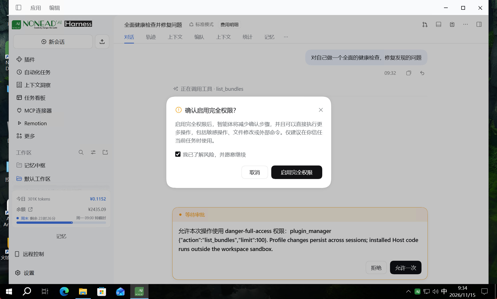
配置过程中顺手点了一下输入框的麦克风，收到一个提醒：语音输入插件已经启用，但本地识别模型还没装。这就是「实验性插件」的典型形态——开关在，能力要靠下载补齐。
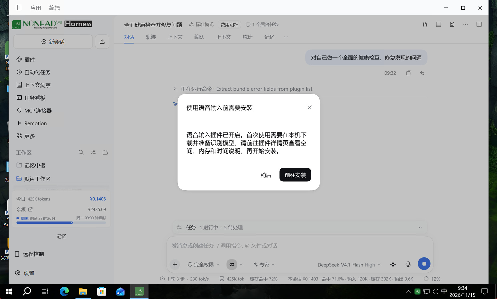
详情页有三行选择：输入设备、识别服务、识别语言。截图时「输入设备」显示系统默认 — 不可用，因为这台机器没插麦克风——不影响先把模型装好，插上之后下拉里会出现设备。识别服务是 SenseVoiceSmall (INT8)。

v0.2.2-rc.3，属「实验性」；三行下拉之下是识别服务的说明卡。
点「下载并准备」，下面的清单开始逐项打勾。五步依次是：检查本地资源、准备语音识别模型、准备语音检测模型、校验模型文件、加载模型。中途可以看到具体在传哪个文件、多大、多少百分比。


model.int8.onnx，总量 239.2 MB。这一步最花时间，走完之前可以去做别的。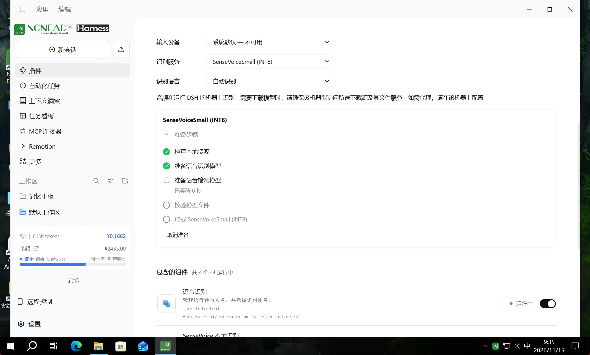

装完模型、改过权限，都需要让改动生效。设置页右上角那颗「重启」按钮不是单选，而是一个下拉，三种力度差别很大。
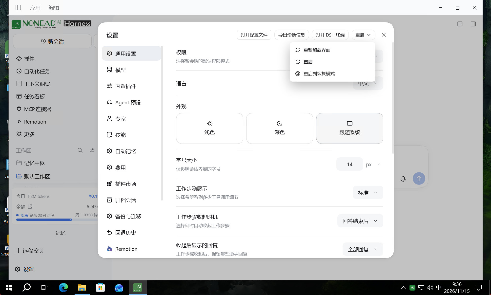
权限给到位之后，这一轮开始在后台跑。界面上只显示两件事：当前在调什么工具，以及右侧那张任务清单——它自己把活拆成了六步：收集运行环境与日志证据、检查配置与 profile 完整性、检查插件/捆绑包加载错误与依赖缺失、检查 MCP/技能/记忆/任务子系统、修复确认的问题并复验、输出健康报告与记忆归档。
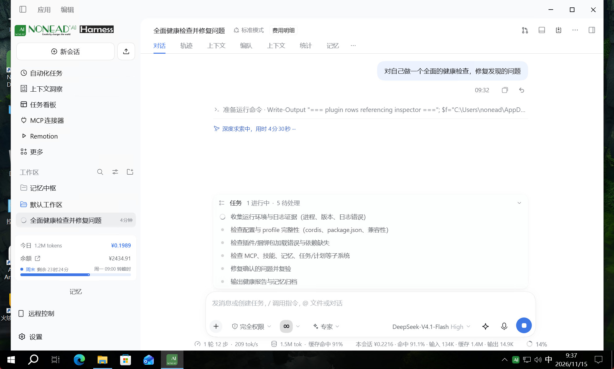
十五分四十二秒后收尾，结论很干脆：日志里 15 条 error、29 条 warn 逐条溯源，其中 3 个是真实故障，已修复并复验，其余属于设计内行为或已自愈。
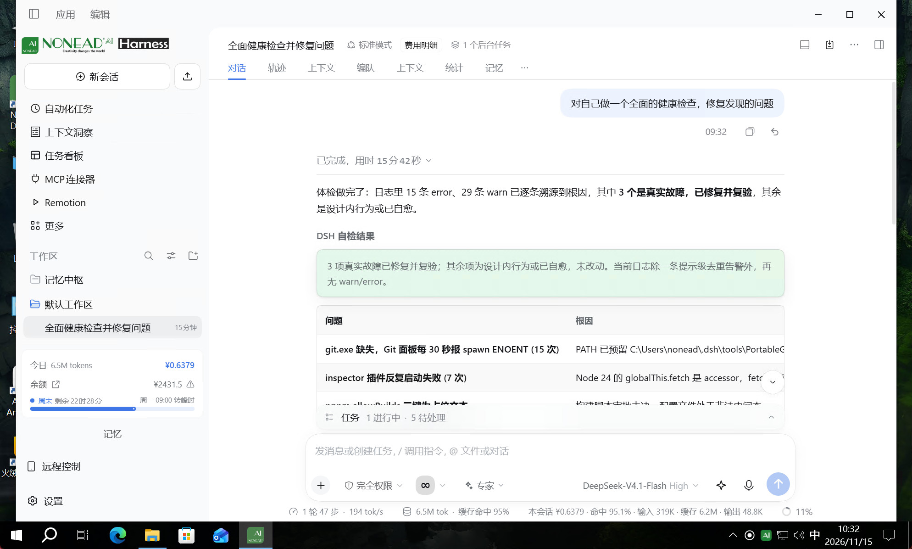
git.exe 缺失导致每 30 秒报一次 spawn ENOENT、inspector 插件反复启动失败等。三处修复各写了一段「为什么这么修」。这一段值得完整读一遍，因为它解释了这台机器上几个看起来「莫名其妙」的现象：

captureFetch:false）、pnpm-workspace.yaml 处于非法中间态。
报告里点名的那三个工具，直接回一句「帮我安装 gh、ffmpeg、uv」就够。它在当前会话里改了 2 个文件（cordis.patch.yml、pnpm-workspace.yaml），随后开了个新会话专做这件事——长任务换新会话，轨迹更干净。
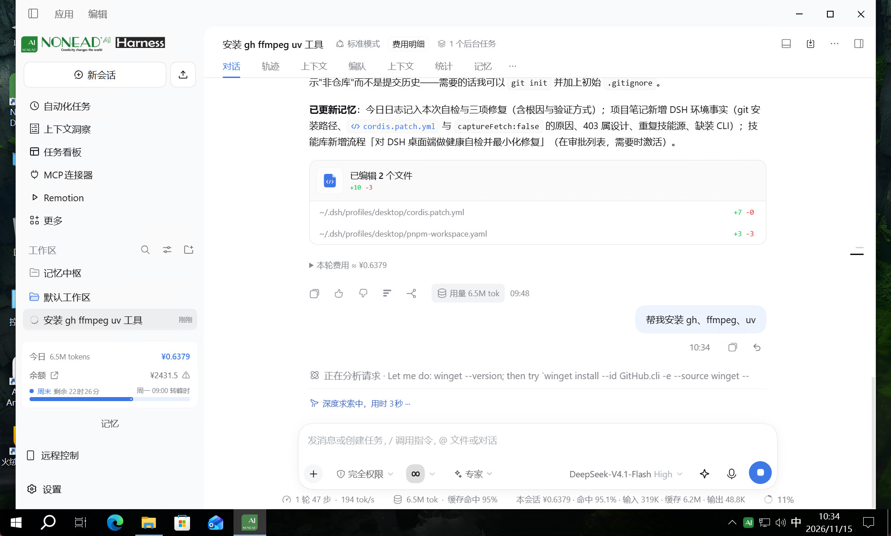
+10 −3），下半部分是新的指令。
它没有直接用 winget，而是拿便携二进制。原因在轨迹里写得很清楚：winget 里这三个包都是 machine 作用域的 MSI，当前会话没有管理员权限，装到一半必失败。下面的截图是下载 gh 时的任务输出面板——这类长任务可以用右侧面板盯着进度，不必守着对话。

gh v2.104.0 → gh_2.104.0_windows_amd64.zip (14.5 MB)，出问题时这面板是第一手证据。等下载的空当，顺手认一下右侧栏。点会话右上角的方块图标展开「开始」面板，这里是一排常用视图：文件、代码审查和变更、上下文、新建终端、Git、浏览器、任务管理、侧边对话、会话数据诊断，以及「更多」。
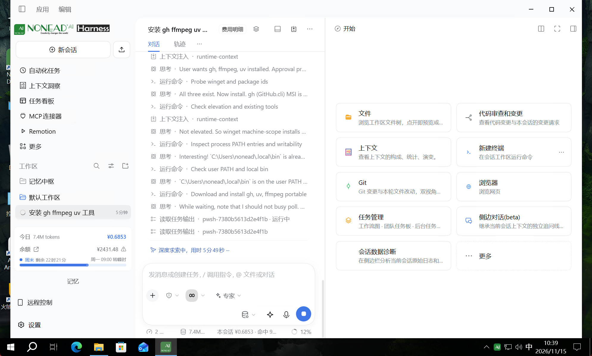

同一排里还有个「导入 DeepSeek 会话记录」的入口，用于把官网导出的 deepseek_data-*.zip 导进某个工作区。这次没有旧会话要迁，点开看一眼就取消了。
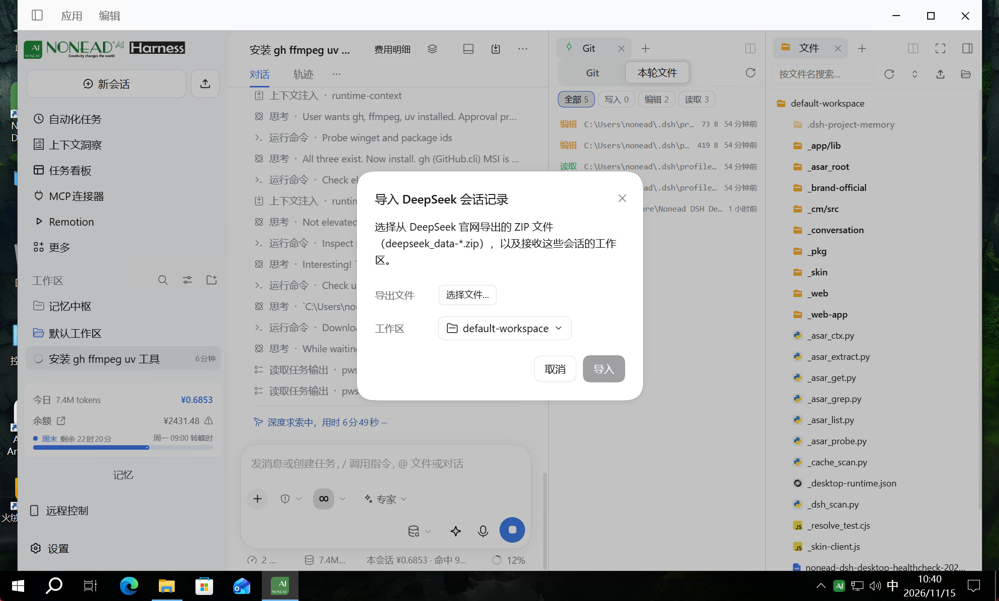

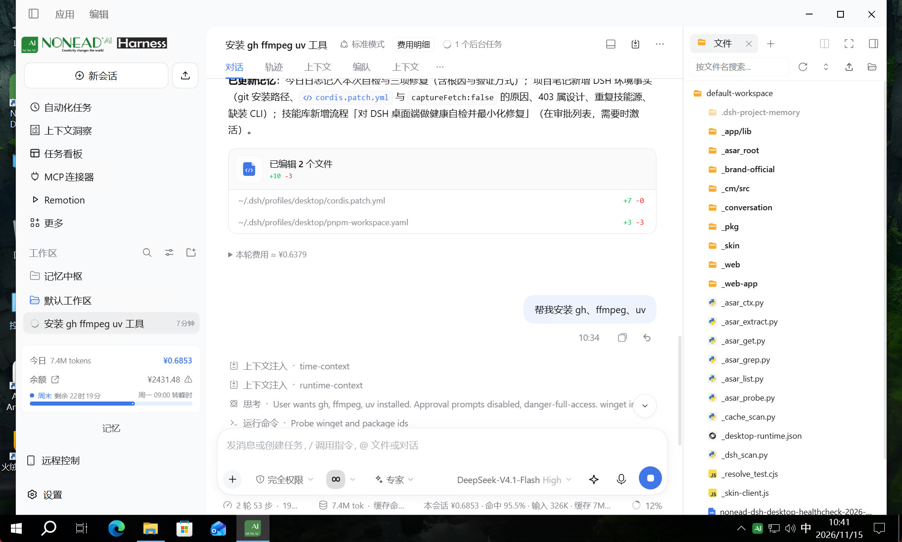

nonead：拓德的四个插件，其中两个已安装。装完预置的那批之后，要加能力就从这个搜索框开始。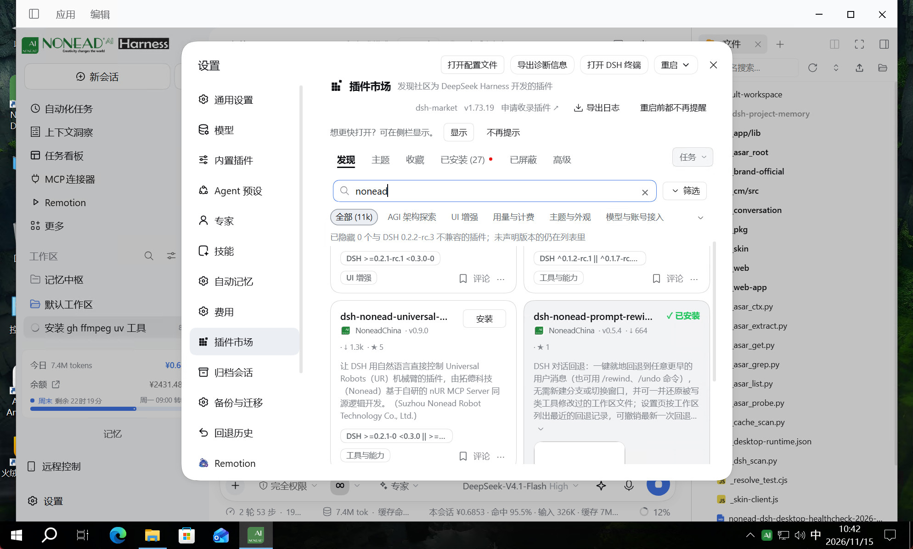
dsh-nonead-universal-robots v0.9.0（机械臂控制）、dsh-nonead-prompt-rewind v0.5.4（对话回退）。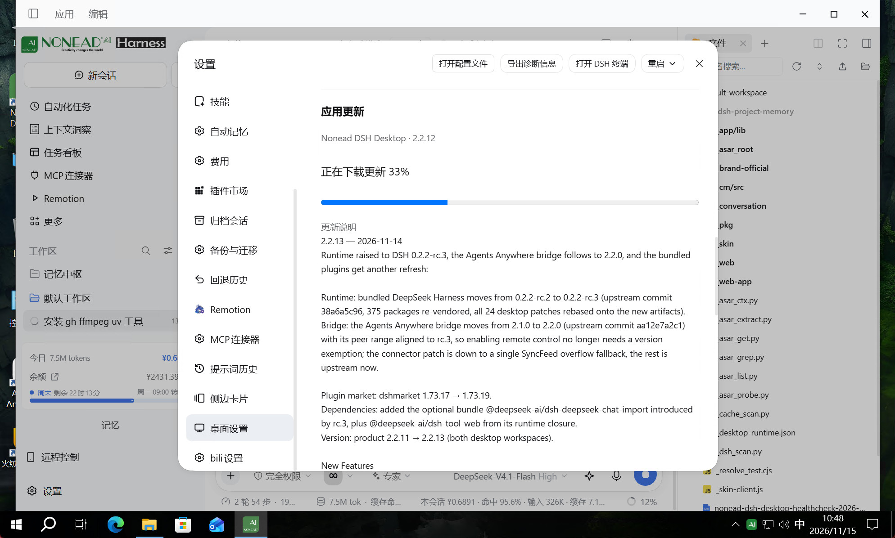
2.2.13 的变更（内核 0.2.2-rc.3、AA 桥 2.2.0 等）。下载在后台走，托盘菜单里也能看到同一条进度。更新不需要退出正在跑的任务，它会自己下完，安装时再问你。
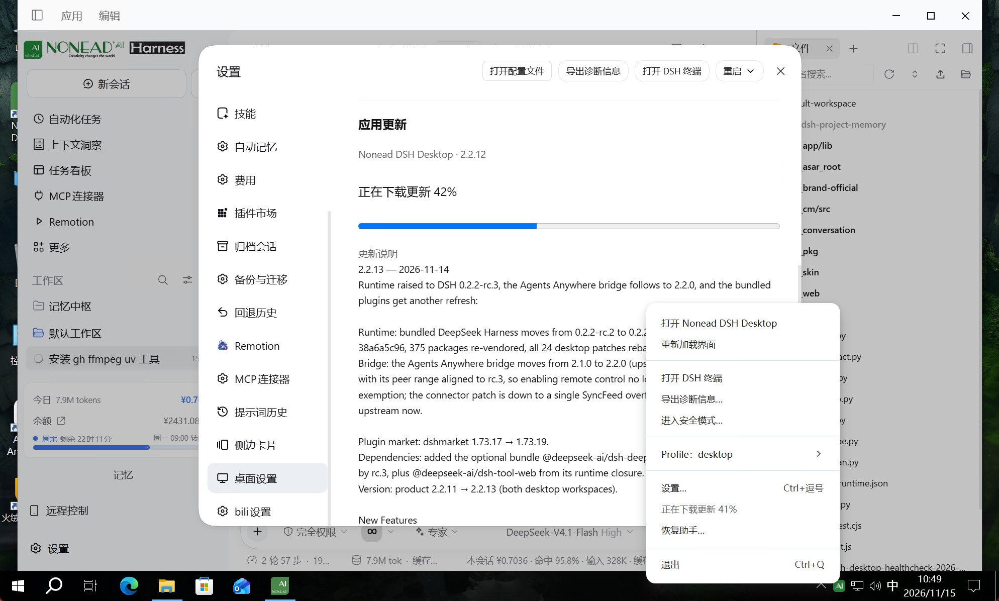
通用设置里的「语言」是一个九项下拉：中文、English、日本語、Español、Français、Deutsch、Русский、Português。切换是即时的，不用重启，也不影响正在跑的会话。
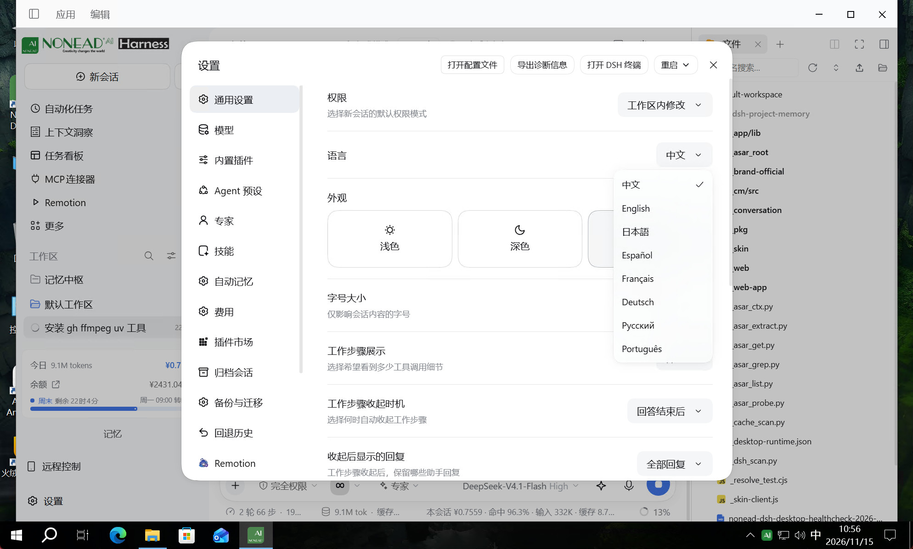

Application / Edit、Settings、General 这些壳层文案一起变；权限项显示为 Workspace Write。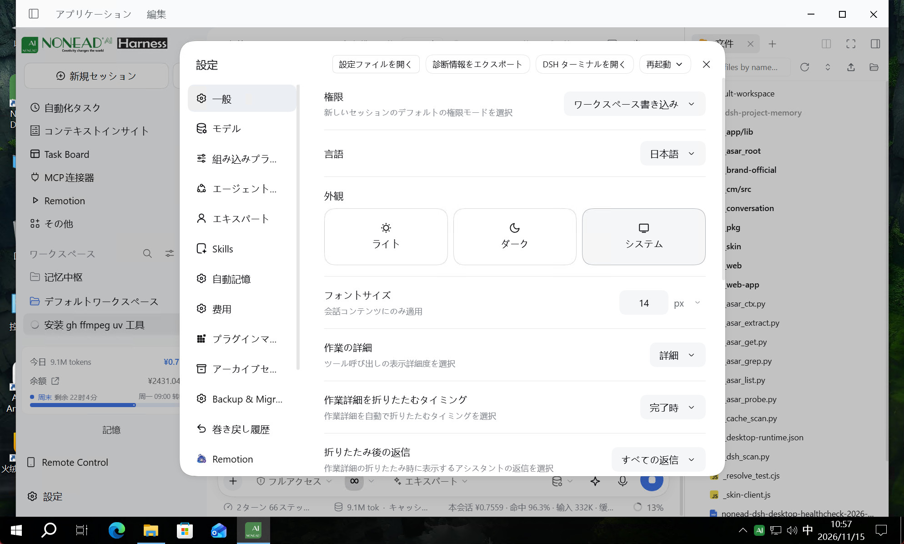
切到俄语时能看到一个细节：侧边栏里 Task Board、MCP 连接器 仍是原文没变。这不是没生效，而是这两处文案由插件提供，插件本身没带该语言的翻译——界面语言只覆盖宿主自己那部分。

Task Board 与 MCP 连接器 停留原文，因为它们是插件提供的入口。语言切回中文，那个装工具的长任务也回来了。二十八分十一秒结束，四个二进制都落在 C:\Users\nonead\.local\bin——这个目录本来就在用户 PATH 里，也在当前 DSH 进程的 PATH 里，所以不用重启就能被插件直接调用，而且全程没要管理员权限。
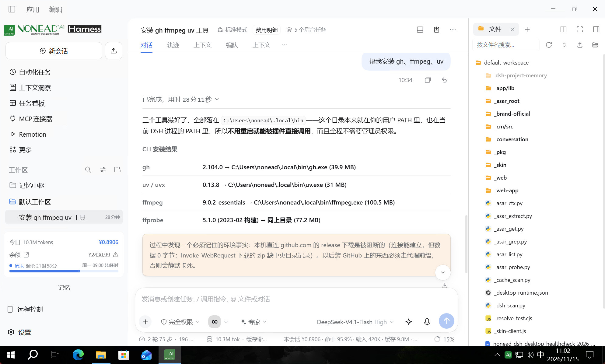
后面那段解释为什么要绕镜像，值得一读：这台机器上 github.com 的 release 直连是被拦的——连接能建立，数据 0 字节；换到代理才成功。这不是个例，国内网络里装 GitHub 上的工具基本都会遇到。它给的四个工具来源分别是 gh 走 gh-proxy.com、uv 走清华 PyPI、ffmpeg 走 npmmirror 的安装包再换上 gyan 的官方二进制。

改完设置、装完工具，最后一步是重启让宿主重新读配置。这一次把「工作步骤展示」从「标准」改成了「详细」——排查阶段看得细一点更省事，日常可以再调回去。
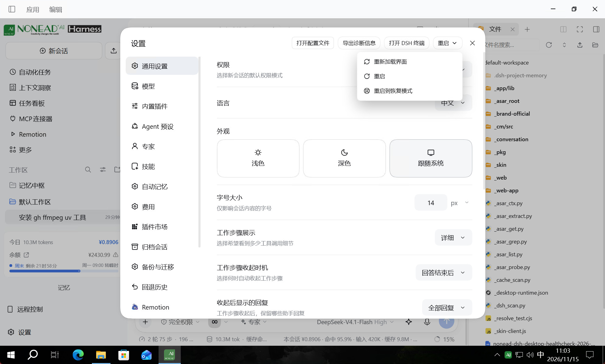
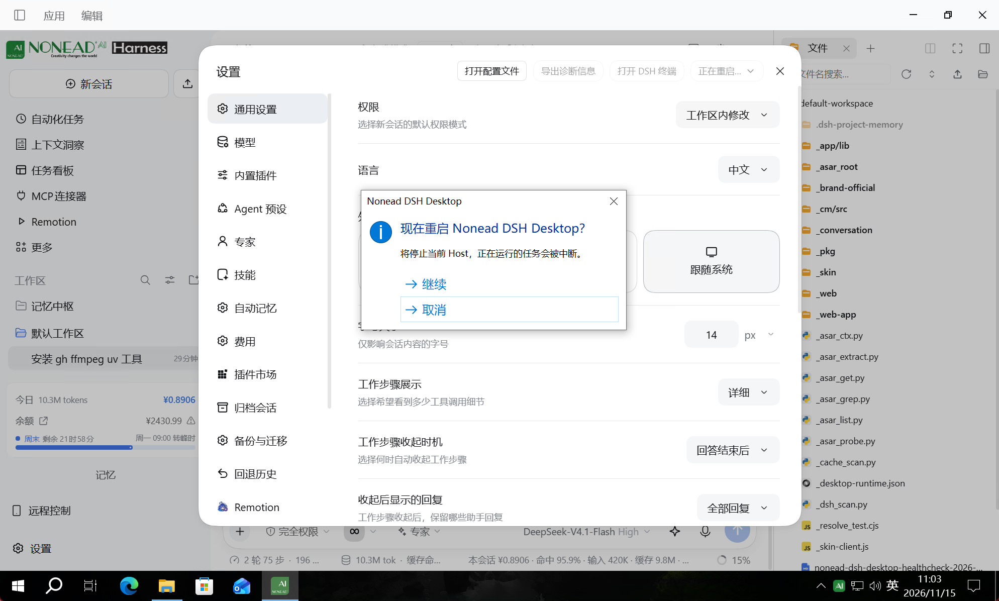
gh auth login（走浏览器 OAuth）；被墙时先设 GH_HOST 或 HTTPS_PROXY。这一步没法代劳，得你自己在终端里点完授权。
重启之后再回来，右侧「开始」面板里多了两块新视图：拓德 UR 数字孪生、拓德 UR 仿真器——那是刚在插件市场看到的 UR 插件提供的。装插件不只是加工具，还会往侧边栏和面板里加入口。

gh auth login）。右侧多了数字孪生与仿真器两个入口。顺手点开「上下文」面板，能看到这一路下来的账：总 token 约 10.3 M，缓存命中 95.89%，活跃时长 42 分 38 秒，其中大头花在工具执行与模型等待上。这组数字以后就是判断「这一轮贵不贵」的依据。

10.3 M 总量、缓存命中 95.89%、活跃时长 42m38s；下方色条是各阶段耗时占比。
到这里，一次完整的首次安装就结束了：程序装好、27 个插件到位、模型接通、权限与目录按需调过、三个外部 CLI 补齐、语音模型可用、语言与更新都试过一遍。接下来读第四节认界面就行。
--version 打出版本；
| 区域 | 位置 | 管什么 |
|---|---|---|
| 侧边栏 | 左侧 | 会话列表、新建会话、插件与技能入口、任务看板、手机连接、设置入口；可折叠 |
| 对话区 | 中间 | 你和它的往来消息、工具调用过程、文件改动与命令输出、渲染出来的图表与面板 |
| 输入框 | 底部 | 输入需求；可附加文件、切换模型、选择工作目录；发送后随时可中断 |
| 桌面控制栏 | 窗口顶部 | 由桌面壳提供：返回/前进、刷新、窗口控制；不同平台形态略有差异 |
装了预装插件之后，侧边栏和输入框还会多出一些入口：任务看板、费用看板、输入历史、专家团等。它们都是第九节里那些插件提供的，关掉对应插件就会消失。
把需求说清楚的三个要点：
窗口关掉后，托盘图标就是应用的总入口。右键托盘图标可看到：
| 菜单项 | 作用 |
|---|---|
| 打开 Nonead DSH Desktop | 把窗口重新调出来 |
| 重新加载界面 | 等同于网页的刷新，不重启后台服务 |
| 打开 DSH 终端 | 打开内置终端，可执行 dsh 命令（仅 Windows / macOS） |
| 导出诊断信息… | 打包日志与系统信息，反馈问题用 |
| 进入安全模式… | 用临时环境启动，排查插件问题（见第十节） |
| 退出安全模式并重启… | 安全模式专用，恢复正常启动 |
| Profile：<名称> | 子菜单：切换 Profile、新建 Profile…、管理 Profile… |
| 设置… | 打开桌面设置页 |
| 检查更新… | 手动检查更新；有可用更新时，这一项会变成下载 / 安装 / 重启 |
| 在浏览器中打开 | 开启浏览器访问后出现，用默认浏览器打开当前界面 |
| 恢复助手… | 不加载当前 Profile 与插件，进入恢复模式 |
| 退出 | 真正退出应用，后台服务一并结束 |
上一版手册里提到的「模式：增强 / 兼容 / 扩展」已经取消：2.2.9 起窗口模式固定，只在设置里保留「窗口外观（材质）」这一项。
设置入口在侧边栏底部（设置 → 桌面设置）。各分区如下：
| 分区 | 能改什么 | 生效方式 |
|---|---|---|
| Profile | 选择启动时使用的 Profile、新建、删除（删除是把该 Profile 移入恢复备份目录，共享的会话和设置会保留） | 重启 |
| 窗口外观 | 纯色或玻璃背景；不再提供兼容 / 扩展 / 增强三种窗口模式 | 立即 |
| 浏览器与局域网 | 允许在浏览器打开、仅本机或局域网、导出本地 CA 证书 | 立即或重启 |
| 桌面通知 | 本轮任务、后台任务、自动化任务完成或失败时是否发系统通知 | 立即 |
| 权限 | 查看并申请系统权限（麦克风、屏幕录制、辅助功能等） | 立即 |
| 启动 | 登录系统时自动启动应用，并保持窗口在后台 | 立即 |
| 后台运行 | 关闭窗口后是否继续保持后台运行 | 立即 |
| 桌面工具 | 设置向导、打开数据目录 / Profile 目录 / 日志目录、开发者工具、日志级别、开发者日志、打开恢复助手 | 立即 |
| 版本与更新 | 当前版本、检查更新、重启 | 立即 |
| 插件与市场 | 已移到插件页面：市场开关、远程控制开关都在那里 | — |
安全模式下这个页面是只读的，浏览器访问、局域网、远程控制、通知等项也会被禁用——这是设计如此，不是坏了。
Profile 是一套独立的配置环境：会话、插件、设置都各归各的，互不干扰。典型用法是「工作」和「个人」各一套，或「日常」与「试验新插件」各一套。
三条实用规则：
这一节是本版手册的重点。2.2.12 的安装包自带 27 个插件，分布在六个大类里，第一次向导完成时自动装进当前 Profile。下面先讲清「装了什么、怎么装的」，再按分类逐个介绍，最后讲怎么管、怎么再装。
安装包把 27 个插件的压缩包一起分发（plugins/ 目录），首次向导结束时逐个装进 Profile。它们不是「可选下载」，而是装完就在：打开插件页，能在「已安装插件」里看到全部 27 个，默认处于启用状态。
| 分类 | 数量 | 这一类解决什么问题 | 一眼能认出来的入口 |
|---|---|---|---|
| 记忆与上下文 | 4 | 让对话记住来时的路，重要信息不必每次重讲 | 自动记忆、项目持久记忆、上下文压缩、上下文洞察… |
| 界面与工作区 | 7 | 面板、看板与市场工具，把工作区布置成你想要的样子 | 生成式 UI、任务看板、会话归档、增强侧边栏… |
| 智能体与技能 | 7 | 更多可召唤的智能体、专家团与技能，随时听候调遣 | 子 Agent 委派、专家库、技能管理、架构图… |
| 文档与媒体 | 3 | 直接读写 Office 文档、表格、图片与视频 | Excel 对话、文档转 Markdown、视频工作台… |
| 代码与工程 | 2 | 代码审查与仓库可视化，把工程现场看得更清楚 | Git 图谱、代码审查… |
| 连接与自动化 | 4 | 接上 MCP、配置与历史记录工具，把流程串起来 | 配置管理、MCP 连接器、输入历史、对话回退… |
dsh-base、dsh-web-app 那种真正内置、不可卸载的基础组件不同（后者在「设置 → 内置插件」里看）。
向导第二步里的插件市场（dsh-market，即 dshmarket 1.73.20，或内置的 dsh-community-market）是另一个选项，不属于这些随包插件。
几个值得知道的细节：
package.json 依赖里出现这个包名，而不是命令有没有报错；装完还会把名字补进 profile.bundles，否则会出现「装了但没启用」。bundled plugin not installed: <名称>: <原因>），向导照常结束。事后可在插件页核对哪些真的在列表里。以下按六个大类列出全部 27 个插件。名称后的 v 是随包版本；「适合」一句是给你的选择建议，不是功能限制。
让对话记住来时的路，重要信息不必每次重讲。
@a9i5k4/dsh-auto-memoryv3.3.17· a9i5k4主动联想记忆。开工前自动唤回相关的历史工作与已定决策，注入上下文；内置三层自动沉淀，日志会变成笔记、账本与白板。
适合：一个项目要做很多天、换会话还要接着做。
@yolk_vat-y/dsh-project-memoryv0.7.0· 00080000把 PDF、Markdown 等文档与代码符号索引进工作区本地库，检索时带 path:line 出处，也会把任务、读过的文件与踩坑经验存下来。
适合：文档多、代码库大，不想反复通读。
billion-contextv0.1.213· ranxianglei把长会话折叠成摘要，用更小的上下文窗口和更少的 token 跑完；官方称可支撑数月长的单次会话、累计数十亿 token。
适合：一次会话要跑很久、上下文总是顶到上限。
dsh-contextv0.84.1· bowenliang123用仪表板看上下文由什么组成、怎么增长，需要时压缩；提供 /context 命令与侧边栏面板。
适合：想弄清「上下文到底被谁占满了」。
面板、看板与市场工具，把工作区布置成你想要的样子。
@changfenhuang/dsh-genuiv0.16.0· changfenhuang模型可以在回复里用 dsh-ui 围栏渲染布局、图表、表单、测验、mermaid 与 3D 场景，面板上的点击事件还能回传给模型。
适合：把一段说明变成可点的面板或对照表。
@linxin666/dsh-client-ui-task-boardv0.4.18· linxin666卡片由 Host 托管并真实开 DSH 会话执行，支持 cron 定时与跨平台休眠抑制。
适合：审查、巡检与定时流水线无人值守地跑。
@michengai/dsh-archive-managerv1.3.5· MichengAI归档、恢复、收藏与永久删除会话，还能诊断损坏的会话日志。
适合：清理历史记录，或找回误归档的对话。
dsh-better-sidebarv0.32.1· 社区贡献者把文件树、编辑器、改动、任务与侧边聊天收进同一列，每个会话独立；还向其他插件开放侧栏标签与文件查看器的注册服务。
适合：边聊边改文件，不想来回切窗口。
dsh-client-auto-continuev0.19.0· 社区贡献者请求被网络错误等非人为原因中断时，自动补发一条本地化的继续提示；也可开启成功后循环继续。
适合：长时间无人值守的任务。
dsh-cost-meterv1.9.64· 社区贡献者统计本会话、当日与历史的 token 和成本，内置 170+ 模型价格目录并自动匹配；还能查 16 家 Coding Plan 订阅额度与自定义 Provider 余额，并在峰谷计价切换前提醒。
适合：核对花销与订阅额度。
dsh-find-pluginsv0.3.0· Eray114514聚合五个社区目录并实时搜 GitHub 与 npm，按相关度、可信度、新鲜度与热度排序，而不是只看 star。
适合：先判断某个能力有没有现成插件。
更多可召唤的智能体、专家团与技能，随时听候调遣。
@deepseek-ai/dsh-tool-subagentv0.2.2-rc.3· DeepSeek Harness Team给模型一个命名工具，把独立任务交给指定的子 Agent 后端执行；每次调用返回子 id，完成通知与清理由运行时负责。
适合：把互不依赖的活拆开并行跑。
@michengai/dsh-agency-agentsv1.2.32· MichengAI内置 331 位可召唤的专业智能体与 5 个专家团，按能力分工处理各类任务，也支持自定义协作方式。
适合：需要某个专业视角时直接点名，而不是让主会话泛泛分析。
@michengai/dsh-skills-managerv1.4.6· MichengAI统一加载并安全管理本机 Agent 技能，支持从 GitHub 安装、预览更新与备份回退。
适合：把散落在各处的技能收拢到一处维护。
@tt-a1i/archify-dshv1.1.0· tt-a1i以纯技能包的形式把 Archify 接入 DSH，让模型按描述生成架构图、流程图、时序图、数据流图与状态图。
适合：梳理系统结构或表达技术方案。
@wenaixi/dsh-superpowerv8.0.0· wenaixi移植 obra/superpowers 的 15 个工程纪律技能，技能描述中英双语可切换，每一个都能单独开关。
适合：给日常开发加上成体系的方法约束。
dsh-github-skillsv0.2.1· 社区贡献者以 OpenAI Codex 的 GitHub 工作流语义为上游基线，针对 DSH 的多 provider、审批机制与技能按需加载做适配。
适合：让 Agent 更规范地处理 issue、PR 与 Actions。
dsh-ppt-masterv6.1.0· 社区贡献者按内容生成可编辑的 PPTX，也能输出 SVG 快照、填充原生模板并做 PPTX 增强。
适合：把大纲或文章快速变成演示文稿。
直接读写 Office 文档、表格、图片与视频。
dsh-excel-chatv0.43.0· 社区贡献者用自然语言读取、编辑、清洗表格并生成报表，每次编辑后自动复查公式、修复静默错误；核心操作不依赖本机安装 Excel（图表与 PDF 导出走 Windows Excel）。
适合：批量改表、清洗脏数据。
dsh-markitdownv0.2.2· 社区贡献者调用微软 MarkItDown，把 PDF、Word、Excel、PPT、HTML、CSV、EPUB 或网址统一转成模型可读的正文。
适合：在读取任何非文本文件之前先转换。
dsh-remotionv0.10.6· stardustlc把 React 工程做成视频，内置官方 Remotion 技能、工程检索、模板、素材排序、Studio 预览与 MP4 导出。
适合：用代码生成带动画的视频。
代码审查与仓库可视化，把工程现场看得更清楚。
@linxin666/dsh-client-ui-git-graphv0.4.14· linxin666在空白会话里切换分支，并查看可视化提交图与 worktree 隔离；Git 操作在宿主进程中执行并带安全守卫。
适合：多 Agent 并行开发，或不想回终端敲 git。
@michengai/dsh-code-reviewv1.0.11· MichengAI在当前会话发起审查，由独立子 Agent 检查 Git、源码、调用方与测试，再把报告带回主会话；可按范围或要求审查，报告支持中英文。
适合：合并前先过一遍机器审查。
接上 MCP、配置与历史记录工具，把流程串起来。
dsh-config-managerv0.8.2· 社区贡献者一键备份、恢复、导出、导入、迁移与同步 DSH 配置，覆盖设置、插件、MCP、技能与工作区，也支持定时备份。
适合：换机器时把整套环境搬过去。
dsh-mcp-connectorv0.2.106· 社区贡献者内置上百个连接器的数据市场，统一管理授权、跨连接搜索工具并排查连接问题，支持 OAuth、API Key 与 HTTP/stdio。
适合：接入企业、金融、法律、专利与研究数据。
dsh-nonead-prompt-recallv0.8.7· 拓德科技空输入框按 ↑ 召回上一条指令，再按 ↑ 往前翻、↓ 往回走，按工作区保存且重启不丢；模型选择器旁还有改写按钮，可在保留 @ 引用的前提下优化草稿。
适合：反复用同一批指令。
dsh-nonead-prompt-rewindv0.5.4· 拓德科技一键就地回退到任意更早的用户消息，目标消息自动回填输入框；还能一并还原写类工具改过的文件，不依赖 git。
适合：走错路时干净地重来。
dsh plugin remove 把包删掉，界面会问一句「卸载后它提供的功能会消失」。.tgz 仍在程序目录的 plugins/ 下，删掉的是 Profile 里的安装副本。真想彻底瘦身，得换一个不带这些包的安装包，而不是逐个卸载。dsh-base、dsh-web-app 这类内置基础组件根本不进可管理列表，只能在「设置 → 内置插件」里看状态。| 途径 | 适合装什么 | 怎么用 |
|---|---|---|
| 插件页 | 官方插件与第三方插件 | 左侧「插件」→「添加插件」→「安装第三方插件」，填 npm 包名、Git 仓库地址或本地目录 |
| 插件市场 | 社区第三方插件 | 先在插件页（或向导第 2 步）启用一个市场并重启，再在市场里搜索安装 |
| DSH 终端 | 已知包名、批量操作 | 托盘 →「打开 DSH 终端」，执行 dsh plugin add <包名> |
插件页（左侧「插件」，副标题是「安装、启用和配置插件」）分两件事：
dsh-xxx 或 @作者/插件名）、GitHub 仓库地址或本机目录。安装时可以选安装源：默认安装源、官方源、中国大陆镜像源，或自定义的内网 npm 源。插件市场有两个可选：dsh-community-market（内置的开放市场，支持自定义数据源，Beta）与 dsh-market（社区热门市场，数据来自 awesome-dsh-plugin，随包插件名为 dshmarket）。两者一次只能启用一个；市场本身就是插件，所以也能在插件页里直接开关。
终端里的三条命令（不带 --profile 时作用于当前激活的 Profile）：
| 命令 | 作用 |
|---|---|
dsh plugin add <包名> | 安装 |
dsh plugin remove <包名> | 卸载 |
dsh plugin update | 更新已装插件 |
装完插件后重启应用才会加载——安装完成时界面会提示「已安装，请重启 DSH 加载它」。确认是否装上：
不用重装系统，也不用删数据目录。走第十节的恢复助手：先在「插件管理」里禁用最近装的那个，再启动；实在不行用「回滚」退回到上一个能启动的检查点。预装插件同样适用——它们和后来装的没有区别。
这两个功能解决的是同一类问题：装了什么之后起不来了。区别在于，安全模式是「干净地进去干活」，恢复模式是「停在门外修」。
安全模式用一套独立的临时数据目录启动：不读你原有的插件、设置、会话与工作区记录，因此也不会被它们拖垮。原数据一个字节都不动。
进入方式：托盘 →「进入安全模式…」；或在恢复助手首页点「安全模式」。
在安全模式里能做什么：
限制（设计如此）：
退出：托盘 →「退出安全模式并重启…」。退出后，临时环境会在下次正常启动时自动清理，不会留在磁盘上占地方。
什么时候会进来：
恢复助手会告诉你三件事：为什么进来（手动进入会写明「已手动进入恢复模式」）、当前用的是哪个 Profile 和哪个目录、启动停在了哪一步（Electron 初始化 → Shell 环境准备 → 桌面运行时准备 → Profile 选择 → 插件配置组合 → 启动插件服务 → 桌面界面启动 → 确认启动结果）。卡在哪一步，问题的范围就缩到哪。
| 标签 | 用途 | 什么时候用 |
|---|---|---|
| 快速恢复 | 安全模式、管理插件、查看检查点、切换 Profile、管理数据、查看诊断的总入口 | 不知道该点哪个，从这儿开始 |
| 插件管理 | 列出直接安装的插件，可「禁用」（保留安装、启动不加载）或「卸载」；内置与受保护项只读 | 怀疑最近装的插件 |
| 回滚 | 恢复启动检查点：同时还原当时的 Profile、共享 settings.yaml 与数据目录补丁（含插件启用状态） | 记得「昨天还好好的」 |
| 切换 Profile | 列出可用 Profile，可切换或新建；当前 Profile 保留 | 一套装坏了，先用另一套 |
| 重置与数据管理 | 查看/更改数据目录、恢复默认目录、恢复出厂设置 | 彻底救不回来时 |
| 诊断 | 查看/编辑 settings.yaml、Profile 补丁、插件清单，打开 Profile 目录，导出诊断包 | 要查根因或提交问题 |
回滚是怎么工作的：每次成功启动后，应用会存一个「启动检查点」——记下那一刻能跑起来的配置。回滚就是把 Profile、settings.yaml 和插件启用状态一起退回到那个时间点。检查点会显示「可恢复 / 无法读取 / 尚无检查点」三种状态；「无法读取」说明那个检查点本身坏了，换一个更早的。
恢复出厂设置：把当前数据目录整体移入废纸篓（Windows 为回收站），重启后新建一套默认 Profile。数据目录之外的项目文件不会被删——它只清自己的配置与会话。执行前请确认你真的不再需要旧会话。
修好之后不必手动清理：直接正常退出恢复助手并启动应用即可。如果是从恢复模式点「重启」，应用会重新走一遍正常启动流程；再失败就回到恢复助手，不会无限循环刷屏。
五个阶段：检查 → 下载 → 安装 → 重启 → 确认版本。四个可复用的操作：
| 现象 | 先做什么 | 还不行再做 |
|---|---|---|
| 双击图标没反应 / 白屏 | 托盘退出后重开；看是否已有实例在跑 | 从托盘进恢复助手，看启动停在哪一步 |
| 启动卡住或反复重启 | 恢复助手 →「切换 Profile」换一套能用的 | 恢复助手 →「插件管理」→ 禁停最近装的那个 |
| 首次向导装插件很慢 / 停住 | 27 个包逐个装，等进度走完；单包失败不影响启动 | 看「设置 → 日志」里的 bundled plugin not installed 记录 |
| 装了插件后界面报错、面板 4xx | 在插件页停用该插件后重启 | 卸载它，换替代插件 |
| 插件装完了却没效果 | 在插件页确认它已启用，然后完全退出重开 | 看「设置 → 日志」里的加载报错 |
| 窗口关掉后找不到应用 | 看托盘图标，应用默认不退出 | 托盘 →「打开 Nonead DSH Desktop」 |
| 任务跑一半没动静 | 看是否被安全停止或等待确认；检查日志级别 | 导出诊断信息，带上时间点反馈 |
| 浏览器打不开 | 确认已开启浏览器访问 | 设置里重开「允许在浏览器中打开」 |
| 局域网设备连不上 | 确认已开启局域网访问、设备已信任证书 | 检查防火墙与本机 IP 是否变化 |
| 更新装不上 | 托盘退出应用后重跑安装包 | 导出诊断信息，附安装器报错截图 |
| 设置页灰掉不能改 | 大概率在安全模式，看顶部提示条 | 退出安全模式并重启 |
托盘 →「导出诊断信息…」，或设置页底部同项。导出包里有本地路径、日志、系统信息、崩溃时的内存片段。分享前自己先看一遍：路径和会话片段可能包含隐私内容。
| 内容 | 位置 |
|---|---|
| 应用数据（Profile、设置、会话、插件） | Windows：%APPDATA%\Nonead DSH Desktop；macOS：~/Library/Application Support/Nonead DSH Desktop；Linux：~/.config/Nonead DSH Desktop |
| 程序本体 | Windows 默认装在当前用户目录（安装时可改；本机示例为 D:\Software\Nonead DSH Desktop）；macOS 为「应用程序」；Linux 为 AppImage 所在位置或包管理器安装路径 |
| 预装插件的原始包 | 程序资源目录下的 plugins/（27 个 .tgz 与 manifest.json） |
| 桌面日志 | 设置 → 桌面工具里可开；随诊断包导出 |
| 会话文件 | 数据目录下的会话存储；恢复助手「诊断」里可直接打开 Profile 目录 |
| 你的项目文件 | 你为每个会话指定的工作目录，不在应用数据里，卸载也不会删 |
README.md / README.zh.md：安装、构建、开发环境。docs/：架构说明、发布流程、插件开发指南。Nonead-DSH-Desktop-User-Manual.en.md 与八个语言的 HTML 版：内容对应，便于对照。CHANGELOG.md：每个版本的变更；2.2.12 条目下有与本册一致的「内置插件清单（27 个）」。本产品建立在上游 DeepSeek Harness 与开源社区之上：Electron、Node.js、pnpm、Python，以及 Cordis 插件体系与官方 bundle 生态。感谢上游维护者与所有贡献者。
随包分发的 27 个插件来自以下作者与团队（按名称排序，同一作者可能贡献多个）：
每个插件的具体版本、作者与完整说明，都随包写在 plugins/manifest.json 里，也可以在插件页的详情中查看。
手册随版本更新。发现与当前版本不符之处，欢迎通过 GitHub / GitCode 提 issue。